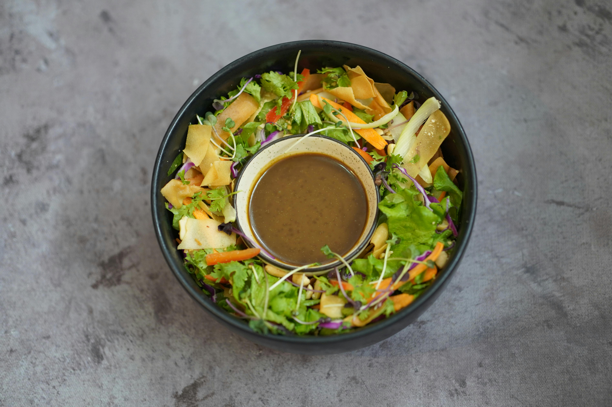

Odin Recipes
Here you'll find the best fake recipes online, for the Odin Project Class: Odin Recipes!
Good luck following these recipes!
Here you'll find the best fake recipes online, for the Odin Project Class: Odin Recipes!
Good luck following these recipes!

This is the best salad dressing you will ever taste. Balanced, rich sweet and sour!
It works in every salad combination! Beleive me: you will love it!
The best part is: it only have 5 ingredients!